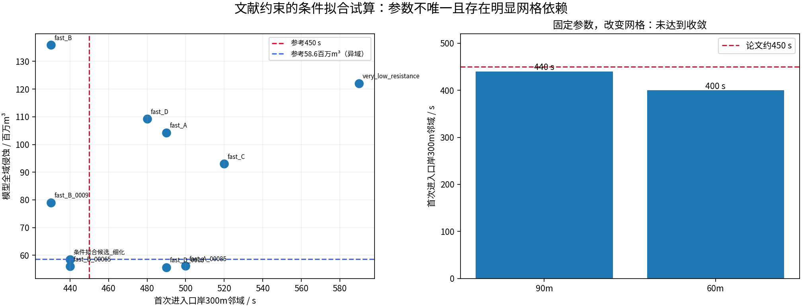
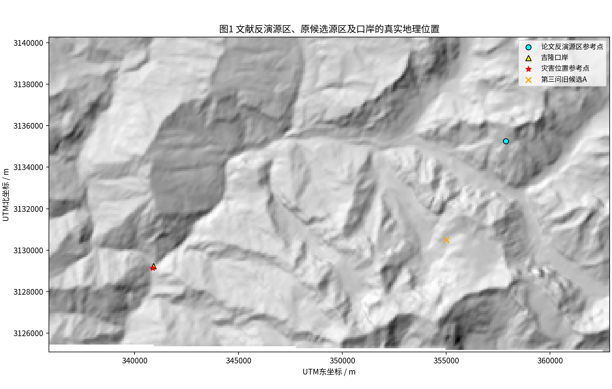
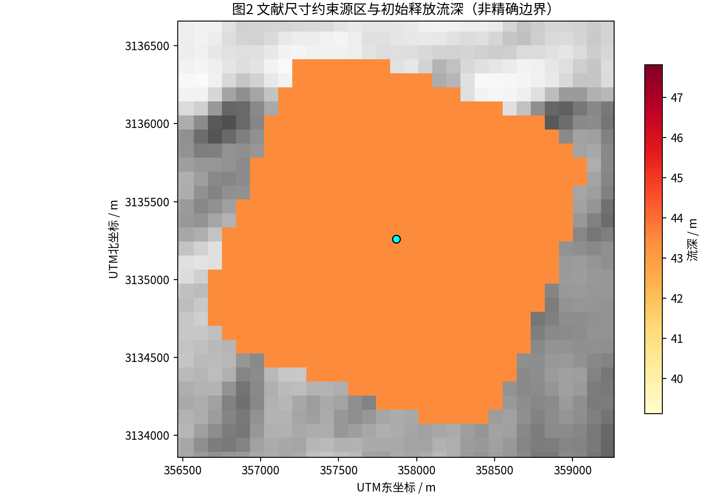
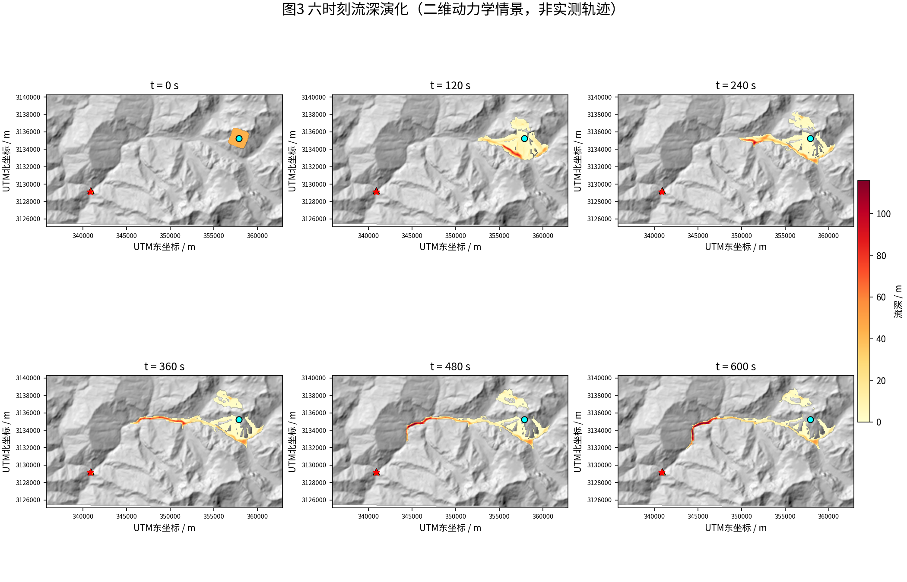
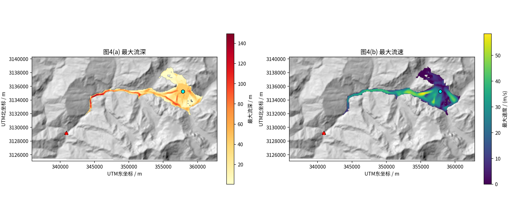
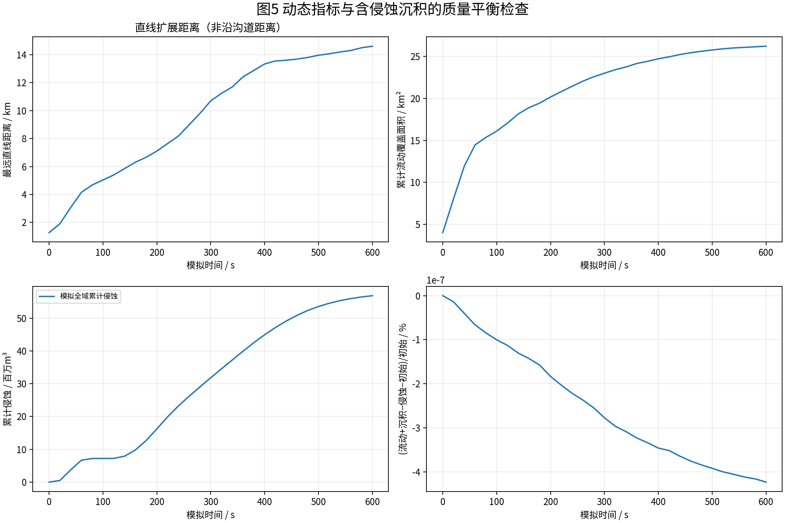
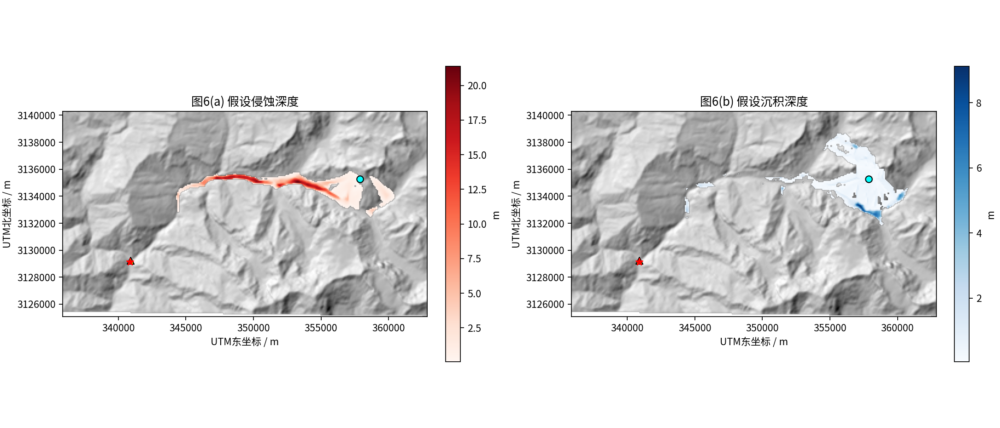
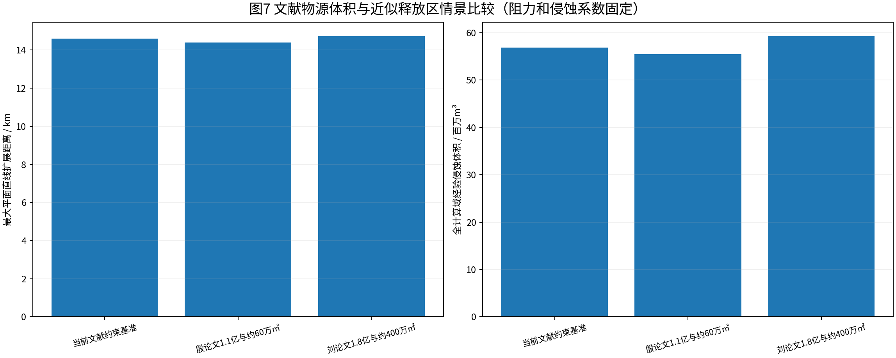

2026 MATHORCUP · QUESTION 4 · OFFLINE RESEARCH VIEWER
吉隆“8·26”冰岩崩—泥石流动力学推演
基于用户提供的EPSG:32645真实30米DEM、二维深度平均守恒方程、Voellmy阻力与经验侵蚀沉积。数值计算使用90米格网（或命令行指定），三维显示单独降采样。可在网页中旋转地形、播放帧、查看计算曲线及情景对比。
研究边界：本项目是文献约束的数值情景，不是被验证的真实灾害复现；源区边界由文献尺度近似，不是遥感精确解译；μ、ξ及侵蚀k尚未完成可靠的独立标定；本页新增条件拟合数值，但仍有网格依赖。不能根据直线传播距离判断沿沟道23km传播，也不能将不同论文、不同河段的侵蚀量直接作为同一目标。
1.75 亿m³基准初始体积（输入）
14.61 km最大直线传播距离
58.4 m/s全域历史最大速度
56.9 百万m³全计算域累计侵蚀
否模拟是否到达口岸300米邻域
新增：基于三篇论文的参数条件拟合试算
严格提醒：下列值不是实测值，也不具有网格收敛性。90米网格候选 μ0=0.06、μ1=0.01、ξ=5000 m/s²、k=0.000678，约440s进入口岸300米邻域、全计算域侵蚀约5852万m³；同参数60米网格为400s、约6535万m³。侵蚀区域与殷论文两河段口径不同，不得称为真实反演值。
0.06 / 0.01条件拟合初期/后期μ
5000条件拟合 ξ（m/s²）
0.000678条件拟合k（自定义公式）
440 s90m网格首次进入300m邻域
400 s60m网格（尚未收敛）

新增：基于三篇论文的参数条件拟合试算
严格提醒：下列值不是实测值，也不具有网格收敛性。90米网格候选 μ0=0.06、μ1=0.01、ξ=5000 m/s²、k=0.000678，约440s进入口岸300米邻域、全计算域侵蚀约5852万m³；同参数60米网格为400s、约6535万m³。侵蚀区域与殷论文两河段口径不同，不得称为真实反演值。
0.06 / 0.01条件拟合初期/后期μ
5000条件拟合 ξ（m/s²）
0.000678条件拟合k（自定义公式）
440 s90m网格首次进入300m邻域
400 s60m网格（尚未收敛）
① 交互式三维时间动画
上面的播放条按模型保存帧逐时刻切换；流动图层是可视化处理，非实际三维颗粒运动。
② 动态计算过程与质量收支
守恒检查应使用：流动物体积 + 累计沉积 − 累计侵蚀 ≈ 初始体积。到达时间采用保存帧的首次阈值触发，误差受保存步长限制。
③ 文献物源场景比较（非已标定真值）
| 情景名称 | 源区释放体积_m3 | 近似释放区面积_m2 | 平均初始流深_m | 初期mu_假设 | 后期mu_假设 | xi_mps2_假设 | 侵蚀k_假设 | t450s流动到口岸最近距离_m | t600s流动到口岸最近距离_m | 最大直线传播距离_km | 累计侵蚀体积_m3 | 模拟600s到达口岸300m |
|---|---|---|---|---|---|---|---|---|---|---|---|---|
| 当前文献约束基准 | 175000000.0 | 4025843.786982249 | 43.46914814873606 | 0.2 | 0.05 | 1800 | 0.003 | 5494.572643966202 | 3815.7128917601017 | 14.61011245669859 | 56897891.2744888 | False |
| 殷论文1.1亿与约60万㎡ | 110000000.0 | 565881.6568047338 | 194.38693351736828 | 0.2 | 0.05 | 1800 | 0.003 | 5634.795264357437 | 4069.965576542094 | 14.394001734032344 | 55455720.217570014 | False |
| 刘论文1.8亿与约400万㎡ | 180000000.0 | 4025843.786982249 | 44.71112381012852 | 0.2 | 0.05 | 1800 | 0.003 | 5288.711187562484 | 3688.589384567479 | 14.71862562445802 | 59239357.16228664 | False |
仅在同一数据、公式、边界条件下进行比较；没有真实地质侵蚀分区，不能宣称k已经物理标定。
④ 论文约束与模型计算对照
| 对照指标 | 来源 | 论文参考 | 本模型输出 | 可比性与说明 |
|---|---|---|---|---|
| 初始失稳体积 | 刘昌军等DoD | 1.75亿m³ | 1.750亿m³ | 该值是输入，不是预测 |
| 初始失稳体积 | 殷跃平等 | 1.1亿m³ | 1.750亿m³ | 不同团队估算结果不一致，需要做敏感性 |
| 初始释放区面积 | 刘昌军等 | 约400万m² | 402.58万m² | 由超椭圆近似与网格离散形成，非真实多边形 |
| 初始平均厚度 | 刘昌军等 | 约45m | 43.47m | 体积除以近似源区面积；不能代表逐网格真实厚度 |
| 源区高程 | 杨云鹏等 | 5152m | 5450.1m | 初步滑震定位点和论文平均源区高程存在差异 |
| 冰岩崩至交汇口时间 | 杨云鹏等 | 约130s | 未计算 | 缺少有坐标的交汇口控制断面，禁止虚构 |
| 交汇口至口岸时间 | 杨云鹏等 | 约320s | 未计算 | 需交汇口断面位置后才可分段计算 |
| 启动至口岸到达时间 | 杨云鹏等 | 约450s | 口岸300m流深阈值判定；未到达为None | |
| 启动至口岸到达时间 | 刘昌军等数值结果 | 约505s | 论文为独立数值模拟输出，非直接实测 | |
| 早期平均传播速度 | 杨云鹏等反演 | 63.6m/s | 未计算 | 需分段空间线路及穿越时刻，不能用网格峰速代替 |
| 下游平均传播速度 | 杨云鹏等反演 | 46m/s | 未计算 | 需对应路段测量，不能用网格峰速代替 |
| 口岸上游泥痕高度 | 杨云鹏等 | 45m | 未计算 | 泥痕包含冲高，非单纯数值流深 |
| 两河段侵蚀总体积 | 殷跃平等 | 5860万m³ | 5689.8万m³ | 模型为全裁剪域，与两河段范围不一致，不能据此直接反演k |
| 全程侵蚀总体积 | 刘昌军等 | 2.60亿m³ | 0.569亿m³ | 需统一全程范围及DEM差分才能反演k |
⑤ 中文论文插图







⑥ 模型及论文来源说明
源区初步定位（殷跃平等）：85°33′00″E，28°20′09″N；殷文物源约1.1亿m³，源区约1000×600m；刘昌军等DoD初始1.75亿m³，初始面积约400万m²、厚度约45m；杨云鹏等源区约75.68万m²，前段约130秒、后段约320秒，到口岸约450秒。当前默认使用刘文体积与面积；各文献对物源几何有显著差异，不能混用。
三篇论文数据并非同一统计口径；文献没有直接给出本求解器适用的Voellmy μ、ξ及经验侵蚀k。刘昌军等采用宾汉阻力，不可将其参数直接代入Voellmy模型。
可复现：python -m unittest discover -s tests -v、python run_batch.py --sensitivity，网页实时计算用 python -m streamlit run app.py。下载包中包含README和脚本。